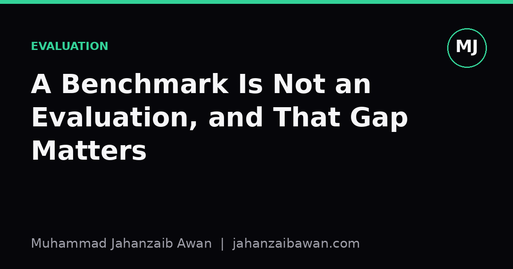

A Benchmark Is Not an Evaluation, and That Gap Matters
Benchmarks measure a model against a fixed test. Evaluations measure whether a model actually works for a purpose. Confusing the two produces confident, misleading claims.

Why the distinction gets lost
In most papers and product announcements, the word 'evaluation' is used to mean 'we ran the benchmark and here is the number'. That usage is so common that people stop noticing the slide. A benchmark is a fixed artefact: a dataset, a metric, and a protocol for scoring predictions against known answers. An evaluation is a broader claim: does this system do the thing we actually need, under the conditions we actually care about. The benchmark can be part of an evaluation, but on its own it is not one.
The conflation happens because benchmarks are convenient and evaluations are expensive. A benchmark gives you a single number you can put in a table and compare across papers. A proper evaluation requires you to think about what the number means, whether the test distribution resembles the deployment distribution, what failure modes are invisible to the metric, and what happens when the data shifts. It is much easier to report 92.4 percent accuracy than to argue, with evidence, that 92.4 percent accuracy on this particular dataset implies anything useful about real-world performance.
This matters because decisions get made on the back of benchmark numbers. A team picks a model for production because it tops a leaderboard. A reviewer accepts a paper because the method beats a prior state of the art by a point and a half. A manager approves a deployment because the accuracy figure looks strong. In each case, the benchmark score is being asked to do the job of an evaluation, and it is not equipped for that job.
A worked example of the gap
Suppose you build a classifier to flag fraudulent transactions, and you test it on a public benchmark dataset of labelled transactions with a reported F1 score of 0.89. That is a benchmark result. It tells you how the model performs on that specific dataset, with that specific label distribution, collected at that specific time, using that specific definition of fraud. It does not tell you how the model will perform on your bank's transactions next quarter, where the fraud patterns have shifted, the feature distributions differ, and the cost of a false negative is not symmetric with a false positive.
Turning that benchmark result into an evaluation means asking harder questions. What is the actual base rate of fraud in your deployment setting, and does the benchmark's class balance resemble it. If the benchmark has 5 percent positive cases and your real traffic has 0.2 percent, the same F1 score implies a very different number of false alarms per day. What is the cost structure: is missing a genuine fraud case ten times worse than annoying a legitimate customer, or the other way round, and does the benchmark's F1 metric even reflect that asymmetry. Has the model seen anything resembling the test transactions during training, directly or through a vendor's pretraining data, which would make the benchmark score optimistic.
Concretely, imagine two models. Model A scores 0.91 F1 on the benchmark and model B scores 0.87. On the benchmark alone, A wins. But suppose A achieves its score mostly by being very good at the easy, high-volume fraud pattern that dominates the benchmark, while B is weaker on that pattern but noticeably better at the rare, high-value fraud pattern that barely appears in the test set but accounts for most of the financial loss in your real traffic. The benchmark cannot see this because it was not built to measure it. An evaluation would stratify performance by fraud type and loss magnitude, and might conclude that B is the better choice despite the lower headline number.
What a real evaluation adds on top
A genuine evaluation starts from the deployment question, not the dataset. It asks what decisions the model's output will drive, what the cost of each error type is, and what population of inputs the model will actually see. Only after answering those does it choose or construct a test set, and that test set is judged by how well it represents the deployment distribution, not by how widely cited it is.
It also takes leakage seriously in a way benchmark reporting often does not. A benchmark score is only meaningful if the test set was genuinely unseen during training and tuning. In practice, hyperparameters get tuned against the same test split repeatedly across a research community, pretraining corpora scrape the internet and absorb benchmark data, and a model that looks like it generalises is sometimes just leaking the answer key through a side channel. An evaluation asks pointed questions about data provenance and split construction before trusting the number at all.
A real evaluation also reports more than one number. Aggregate accuracy or F1 hides the shape of the error distribution. Breaking performance down by subgroup, by input difficulty, by time period if the data is temporal, and by error cost reveals whether the model is reliably good or whether its headline score is propped up by strong performance on an easy majority case. It also includes a comparison against a deliberately simple baseline, because a benchmark score in isolation tells you nothing about how much of the performance is coming from the sophistication of the method versus the structure already present in the data.
Finally, an evaluation is honest about uncertainty and about what it did not test. A single number from a single test set, without confidence intervals, without a description of what population it covers, and without a statement of known limitations, is a benchmark result dressed up as an evaluation. The fix is not complicated, but it requires discipline: define the deployment question first, check the test set is not contaminated, report performance broken down by what matters, compare against a real baseline, and say plainly what the test does not cover. None of that is exotic. It is just more work than quoting a leaderboard number, which is exactly why it gets skipped.